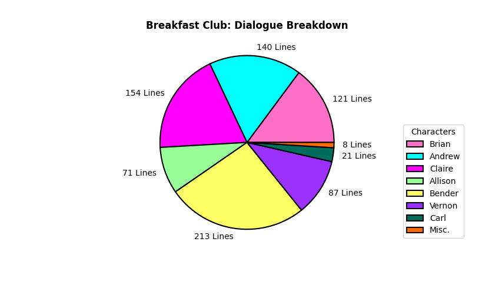
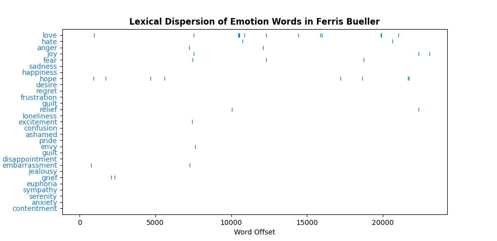
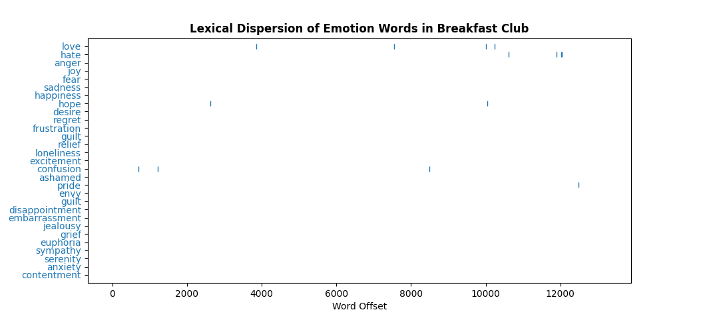
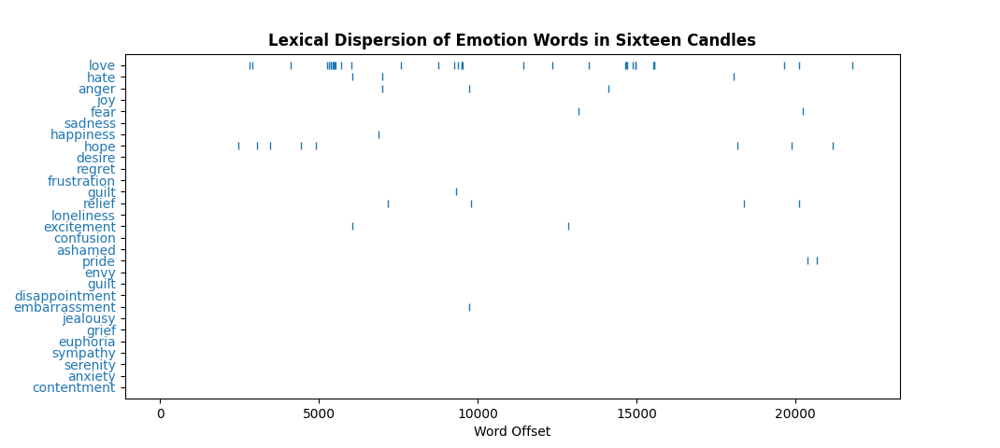
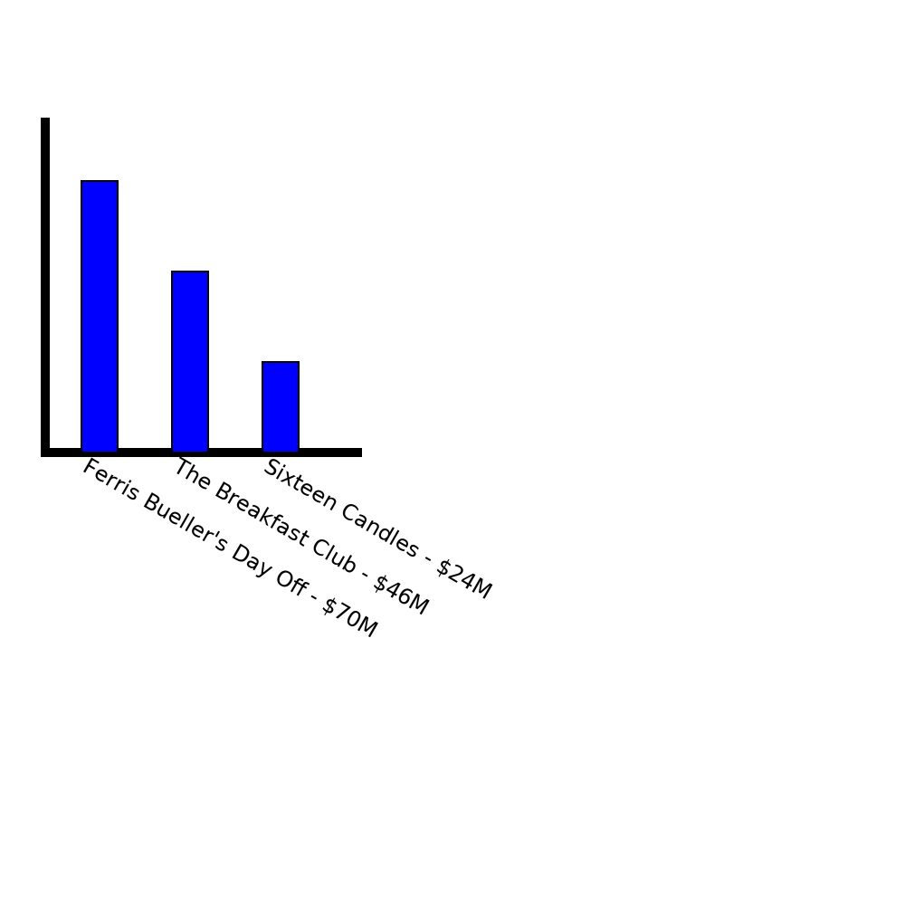
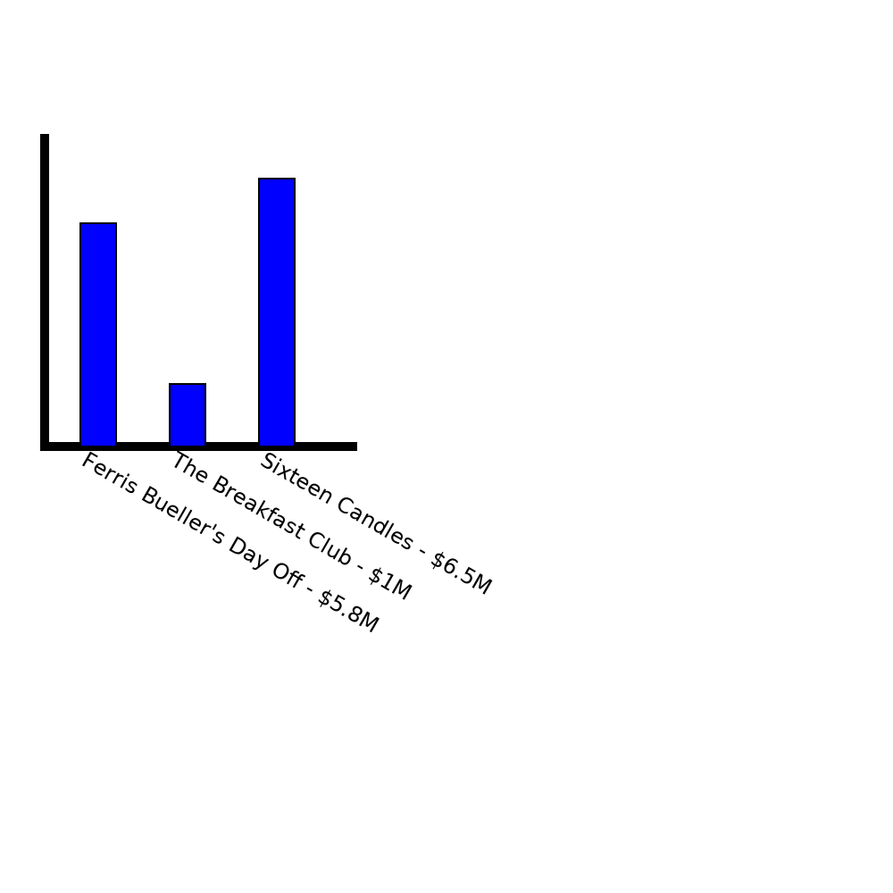
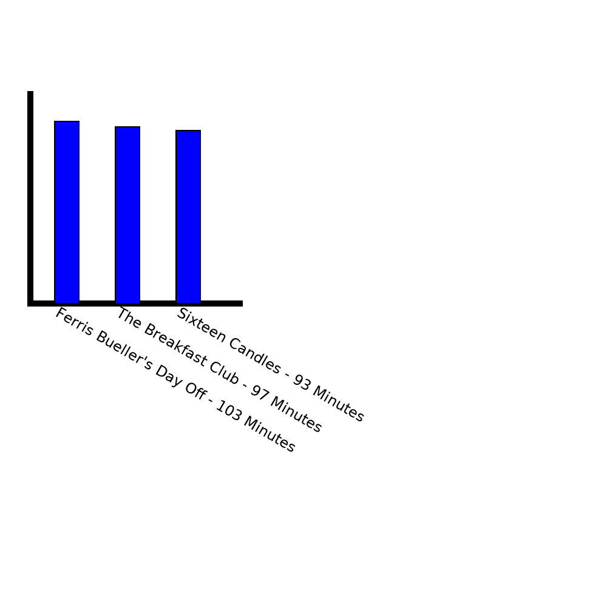

This pie chart represents the number of dialogue instances that each character in "The Breakfast Club" has. Similar to the "character mentions" graph for the movie, Bender takes the lead with 213 lines of dialogue. Allison (the shy, "basket case" character) logically has the least lines out of the main characters (Carl and other miscellaenous characters like parents in the opening only have a couple scenes). Outside of these extremes (and again similar to the character mentions graph), the rest of the characters have similar chunks of screen-time devoted to their words, leading us to the conclusion that there was a clear effort from John Hughes to allow this ensemble cast to feel like an ensemble and for each character to have their own moments to shine.

These three plots represent the lexical dipsersion of various "emotion" words within each script. All of the movies deal with emotion and some of the struggles of growing up, but Ferris Bueller and Sixteen Candles visibly feature the most variety and widest "spread" of words used. This could be a reflection of the types of movies they are, in that Breakfast Club is more confined and features the least amount of different experiences, whereas something like Ferris Bueller travels all over the place to keep things fresh and exciting on a sneak-away day.



A graph displaying the box office returns of each of the three movies we analyzed.
The order of each is from most recent to least recent.
This information for each of the three films was pulled from IMDb.

A graph displaying the production budget for each of the three movies we analyzed.
The order of each is from most recent to least recent.
This information for each of the three films was pulled from IMDb.

A graph displaying the runtime of each of the three movies we analyzed.
The order of each is from most recent to least recent.
This information for each of the three films was pulled from IMDb.

A graph displaying the number of scenes found in each of the three screenplays we analyzed.
The order of each is from most recent to least recent.
This information for each of the three films was pulled from IMDb.
Information put together using the following code: